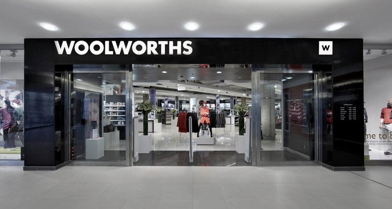
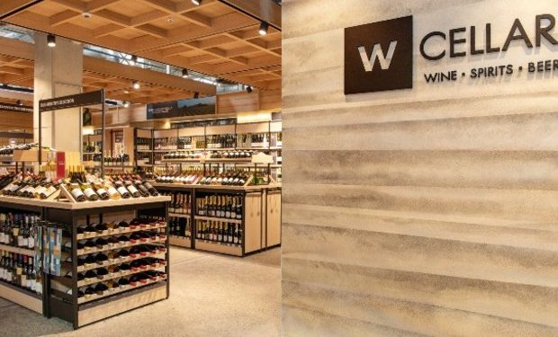
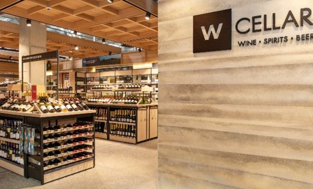

Welcome to Woolworths – a passionately South African retailer dedicated to bringing you quality, style and value for the past 85 years. The first Woolworths store opened its doors to the public in Cape Town in October 1931. And it was founder Max Sonnenberg who captured the public’s imagination with dynamic store policies that set Woolworths apart from its competitors. Three years later, a second branch opened in Durban, with another two in Port Elizabeth and Johannesburg a year later. And since then we’ve been building on our reputation for superior quality, exciting innovation and excellent value.
TELEPHONE
(011) 407 8600
TRADING HOURS
Monday - Saturday: 09h00 - 20h00
Sunday & Public Holidays: 09h00 - 15h00
WEBSITE
https://www.woolworths.co.za/

 
